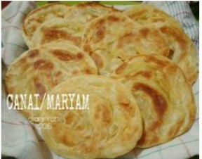
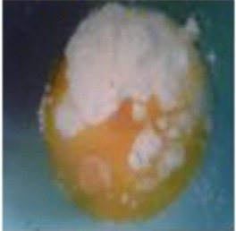
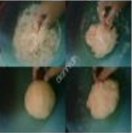
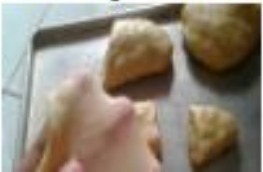

Resep kue maryam
Bahan

- 250 gr tepung terigu
- 1 butir telur
- 3 sdm margarin, lelehkan
- 100 ml air hangat
- 2 sdm susu bubuk (optional)
- 1/2 sdt garam
- margarin leleh untuk olesan
- minyak untuk merendam
Langkah Langkah
- campur semua bahan roti jadi satu

- uleni sampai kalis (aku pakai tangan) jangan takut jika adonan lengket ya,
tangan sesekali dengan tepung (tapi jangan menambahkan tepung uleni terus sampai adonan kalis

- kalisnya adonan canai tidak sekalis adonan roti ya, kira" seperti ini sudah cukup
